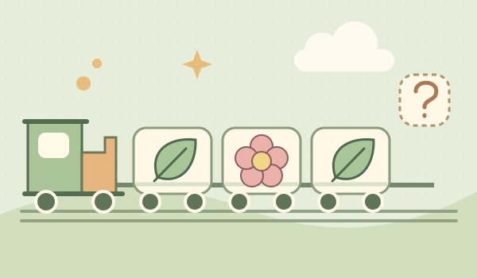
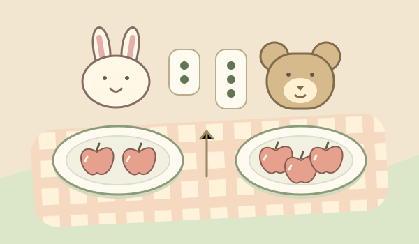

LITTLE IDEAS, LOVELY PLAY
慢慢发现，小小的规律。
这是静态设计交接页，不是可玩的游戏。图形、选中、提示和完成状态供实现参考；所有游戏操作将在后续接入。
花花小火车
看看前面的图案，下一节车厢该装什么？
第 1 / 9 站不计时，慢慢找
?
叶子
✓ 花朵
蘑菇
一片叶子，一朵花。你发现它们在轮流出现了吗？
野餐分分乐
数数小圆点，给每位朋友刚刚好的水果。
第 2 / 8 次野餐点一下，放一个
小兔想要 2 个苹果
现在有 1 个＋ 放一个− 拿回一个
小熊想要 3 个苹果
现在有 0 个＋ 放一个− 拿回一个✓ 苹果
梨子
已选苹果。点朋友下面的「放一个」，多放了也能拿回来。
封面、补充素材与反馈


再看看 ↻ 小兔还差 1 个苹果。数数圆点，再试一次吧。
✓ 刚刚好！谢谢你照顾每位朋友。准备好后，再来一次野餐。
✓ 找到规律啦！叶子、花朵，两节一组。准备好后，去下一站。